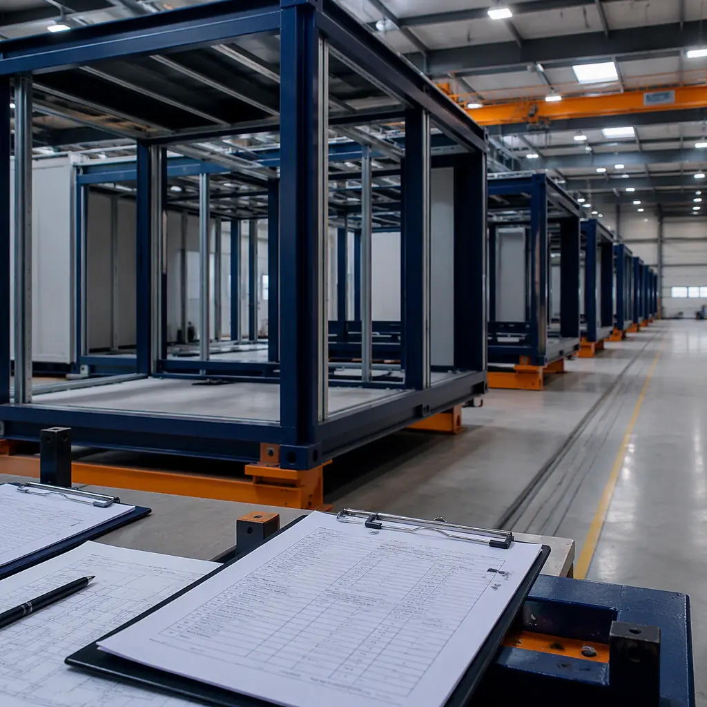
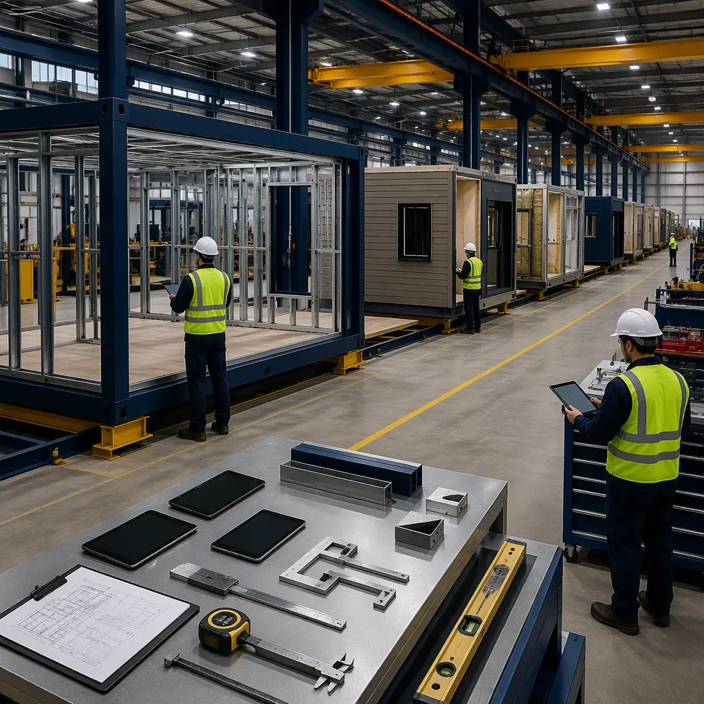
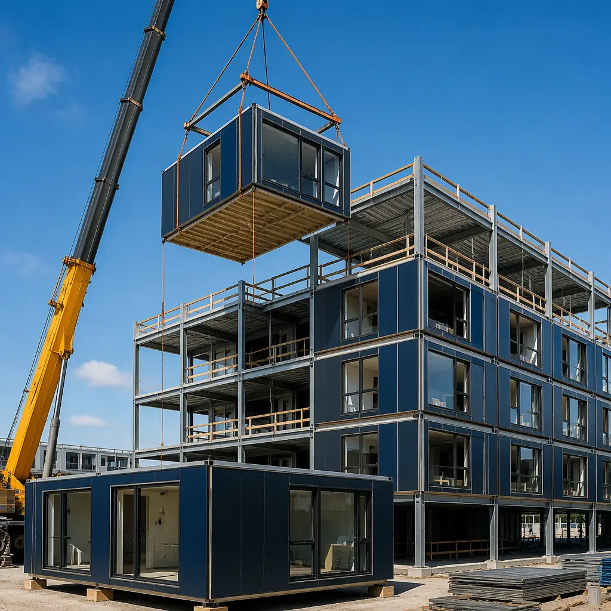

On any public construction project above $100,000 — and on an increasing number of private commercial projects — the developer or contractor must post a surety bond. The payment bond guarantees subcontractors and suppliers will be paid. The performance bond guarantees the project will be completed according to the contract. For a $15 million modular apartment building, the combined bond premium typically ranges from 0.5% to 2% of the contract value — $75,000 to $300,000. Yet most developers and contractors treat surety bonds as a check-the-box requirement rather than a strategic decision. This guide explains how modular construction interacts with the surety underwriting process, what bond requirements apply at each project stage, and how factory-built projects can strengthen a bond application in ways that traditional construction cannot.

Surety Bonds 101: What Developers Actually Need to Know
A surety bond is not insurance — it is a three-party guarantee between the project owner (obligee), the contractor (principal), and the surety company. If the contractor defaults, the surety steps in to complete the project or pay the obligee up to the bond amount. Because the surety's money is at risk, the underwriting process examines the contractor's financial strength, project management capability, and the inherent risk of the construction method.
The three bonds most relevant to modular construction projects are:
- Bid bonds (5–10% of bid amount). Required at the bidding stage to guarantee the contractor will enter into the contract and provide performance and payment bonds if awarded. For modular projects, the bid bond amount must include the value of factory-fabricated modules — not just site work. Underwriters will want to see the modular manufacturer's financial statements and production capacity before approving a bid bond that includes a large factory scope.
- Performance bonds (100% of contract value). Guarantees the project will be completed per the contract terms. This is where modular construction's risk profile diverges most sharply from traditional construction. A modular project that produces 70–90% of building value in a controlled factory environment presents a fundamentally different completion risk than a project entirely dependent on site labor, weather, and trade coordination.
- Payment bonds (100% of contract value for public projects, variable for private). Guarantees subcontractors, suppliers, and laborers will be paid. In a modular project, the largest supplier is the module manufacturer itself — typically invoicing in 3–5 milestone payments rather than dozens of monthly subcontractor draws — which simplifies the payment bond claims exposure compared to traditional multi-trade projects.

Why Modular Projects Are Easier to Bond: The Surety's Perspective
Surety underwriters evaluate three factors when deciding whether to issue a bond and at what premium rate: the contractor's financial capacity, the contractor's track record of completing similar projects, and the inherent risk of the specific project. Modular construction improves each of these from the underwriter's perspective.
Financial capacity. For a deeper look, our modular construction permitting & zoning… guide covers the details. The most common reason bond applications are denied is insufficient working capital relative to the project size. Sureties typically require the contractor to demonstrate net working capital of 10–15% of the total work program (all bonded projects combined). Modular construction reduces the working capital burden because the factory production timeline compresses the contractor's cash-to-cash cycle. Instead of carrying 12–18 months of site overhead, material storage, and labor costs before reaching substantial completion and collecting retainage, a modular contractor reaches 70–90% completion on modules in 8–14 weeks of factory production. The faster the contractor converts contract value into completed work, the less working capital is tied up — and the stronger the balance sheet looks to the surety.
Track record. For a deeper look, our modular construction financing — loans,… guide covers the details. A surety evaluating a traditional contractor wants to see 3–5 completed projects of similar size, type, and complexity. For modular construction, the surety evaluates both the contractor and the manufacturer. MODURA provides a standardized surety submission package for every project, including: factory production capacity certification (modules per week), third-party inspection agency credentials (typically International Accreditation Service or equivalent), a 3-year project completion history with on-time delivery rates, and factory quality management system certification (ISO 9001). This package transforms modular manufacturing from an unknown variable into a documented, auditable production process — exactly what surety underwriters need to approve a bond.
Project risk. For a deeper look, our modular apartment buildings cost guide covers the details. The project-specific risks that drive up bond premiums — weather delays, labor shortages, trade coordination failures, subcontractor default — are all systematically reduced in modular construction. The factory controls weather. The factory workforce is stable, not subject to project-by-project hiring. The module is pre-coordinated in BIM before fabrication begins. Subcontractor default risk is concentrated in a smaller site scope. A surety evaluating two identical $20 million apartment projects — one traditional, one modular — will price the modular bond at a lower premium because the risk of a performance bond claim is materially lower.
The surety industry has been slow to develop modular-specific underwriting guidelines. Most sureties still evaluate modular projects using traditional construction risk models, which means the modular advantage is not automatically reflected in the premium. The contractor or developer must present the modular project correctly — with factory production data, third-party inspection credentials, and a clear delineation between factory scope and site scope — to capture the premium reduction that the risk profile warrants.
| Bond Type | Typical Premium (% of Contract) | Modular Impact on Premium | Key Underwriting Document |
|---|---|---|---|
| Bid Bond | Flat fee: $200–500 per bond | Manufacturer financials required for factory scope | Bid package with modular scope delineation |
| Performance Bond | 0.5–2.0% | 15–30% premium reduction with factory QA documentation | Factory production schedule, QA/QC manual, third-party inspection credentials |
| Payment Bond | Included in performance bond rate | Fewer subcontractors = lower claims exposure | Subcontractor list, manufacturer payment schedule |
| Subdivision Bond | 1.5–3.0% | Faster site completion reduces bond duration | Site work phasing plan, modular delivery schedule |
Bond Capacity: How Modular Frees Up Your Surety Line
Every contractor operates under a surety line — a maximum aggregate bond capacity set by the surety based on the contractor's financial statements. A contractor with $2 million in net working capital might have a $20 million aggregate bond line (10:1 ratio). Every bonded project consumes a portion of that capacity until it reaches substantial completion and the bond is released.
Modular construction accelerates bond capacity turnover. A traditional $10 million project might tie up $10 million of bond capacity for 18 months. A modular $10 million project reaches substantial completion in 8–12 months — freeing $10 million of bond capacity 6–10 months sooner. Over a 3-year period, a modular contractor can bond 30–50% more project volume on the same surety line simply because each project consumes capacity for fewer months. For contractors looking to scale, this is the surety equivalent of improving inventory turns — it multiplies effective capacity without requiring additional working capital. For a deeper look at how modular construction improves developer returns, see our developer ROI analysis.

Miller Act Bonds: Modular on Federal Projects
Under the Miller Act (40 U.S.C. §§ 3131–3134), any federal construction contract exceeding $100,000 requires performance and payment bonds. The surety must be a U.S. Treasury-listed company (Treasury Department Circular 570), and the bond must cover 100% of the contract amount. For federal agencies increasingly turning to modular solutions — military housing, border patrol stations, VA outpatient clinics, and national park visitor centers — the Miller Act bonding process introduces specific requirements for modular manufacturers.
The critical document for Miller Act modular projects is the manufacturer's qualification statement. Unlike a traditional subcontractor, the modular manufacturer is responsible for 60–80% of the project value delivered from a factory. The surety will require the manufacturer to provide: audited financial statements (typically 3 years), a production capacity statement (modules per week, factory square footage, number of production lines), a current work-on-hand schedule showing existing commitments relative to capacity, and evidence of the manufacturer's own insurance coverage (general liability, builder's risk for modules in transit, and workers' compensation). MODURA maintains these documents as part of our standard project submission package, updated quarterly and available to contractors and their sureties at any stage of the procurement process. For contractors pursuing federal modular projects, our government and municipal buildings guide covers the full federal procurement landscape.
What Sureties Look For in a Modular Manufacturer
When a traditional GC submits a bond application, the surety evaluates the GC's capability and financials. When a modular project is submitted, the surety evaluates two entities: the GC and the manufacturer. Here is what sureties specifically ask about modular manufacturers — and what MODURA provides:
- Production facility ownership vs. lease. A manufacturer that owns its production facility presents lower default risk than one leasing short-term space. MODURA's production facilities are company-owned with long-term capital investment, providing surety comfort that production capacity will remain available throughout the project.
- Single-source vs. multi-factory production. A single project produced across multiple factories introduces coordination risk. MODURA produces each project on a dedicated production line in a single facility, with a single production manager and a single quality control chain of command.
- Materials procurement and supply chain. Sureties want to see that the manufacturer has secured long-lead materials — structural steel, building envelope systems, MEP components — before production begins. MODURA's supply chain management includes frame contracts with steel mills, envelope manufacturers, and MEP suppliers, with documented lead times and contingency sourcing for every critical material category.
- Transportation and logistics capability. A manufacturer that relies on third-party transporters without dedicated logistics management introduces delivery risk that could delay site work and trigger a performance bond claim. MODURA's logistics team manages module transportation from factory gate to site, with dedicated route surveys, permitting, and escort vehicle coordination for every project.
For developers evaluating modular construction partners, our partner evaluation framework provides a due diligence checklist that aligns with what sureties, lenders, and institutional owners require.
Subcontractor Default Insurance: An Alternative to Payment Bonds?
On private commercial projects where payment bonds are not legally required, some developers use Subcontractor Default Insurance (SDI) as an alternative. SDI covers the cost of completing a defaulted subcontractor's scope but does not protect unpaid lower-tier subs and suppliers. Modular construction reduces the relevance of SDI because it reduces the number of subcontractors at risk: instead of 15–25 trade subcontractors on a traditional project, a modular project typically has 5–8 site trades (foundation, MEP tie-in, exterior finishing, landscaping) plus the module manufacturer as the primary off-site supplier. The concentration of scope in the manufacturer — who operates under a factory quality system rather than field conditions — reduces the default risk that SDI was designed to cover.
However, SDI does not replace the need for subcontractor payment protections. If the modular manufacturer faces a cash flow disruption or insolvency, the project owner needs a mechanism to protect the investment in partially completed modules. The solution is a manufacturer's performance guarantee — a direct contractual obligation from the manufacturer to the owner, backed by the manufacturer's corporate balance sheet rather than a third-party surety. For an analysis of how modular construction contracts differ from traditional agreements, see our contract types comparison guide.
Practical Steps: Preparing a Modular Bond Submission
Whether you are a developer requiring bonds from your contractor or a contractor applying for bond capacity on a modular project, the following preparation steps will accelerate the surety approval process:
- Engage the surety early. Do not wait until the bid stage to discuss modular with your surety. Schedule a pre-bid meeting where the modular manufacturer presents their production process, quality system, and project history directly to the surety underwriter. An underwriter who has walked a factory floor and seen the production line is far more likely to approve bond capacity than one evaluating modular construction from a desk.
- Separate factory scope from site scope in the contract. A lump-sum contract that doesn't distinguish between factory-fabricated value and site-installed value forces the surety to price the bond as if the entire project carries site construction risk. A clearly delineated contract with separate line items for module fabrication (fixed price, factory QA) and site work (unit prices, field conditions) allows the surety to apply different risk factors to each scope.
- Include the manufacturer's financials in the submission. The surety needs to evaluate the manufacturer as a critical subcontractor. Provide the manufacturer's audited financial statements, Dun & Bradstreet report, bank reference letter, and current work-on-hand schedule. MODURA provides a standardized surety information package for every project.
- Document the production schedule with milestones. A Gantt chart showing module production milestones (steel procurement, framing complete, MEP rough-in, final finish, quality inspection, delivery) gives the surety discrete points to monitor project progress. If a performance bond claim arises, these milestones define exactly what work was completed and paid for — reducing disputes and accelerating claim resolution.
For contractors expanding into modular construction, our workforce development guide covers how to build the site teams needed for modular installation, while our modular construction financing overview addresses the lending side of the capital stack.
MODURA provides a complete surety submission package for every project — including factory production capacity certification, third-party inspection credentials, audited financial statements, and a 3-year on-time delivery history. Contact our team to request the surety information package for your next modular project.